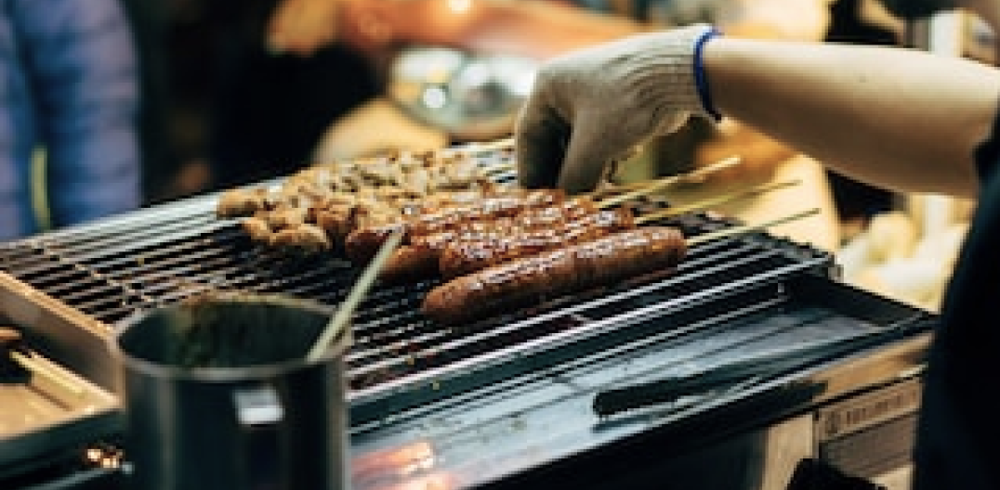
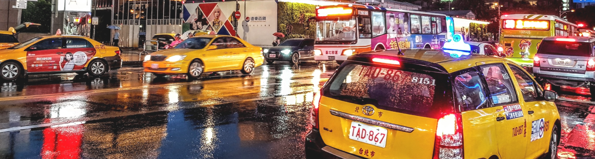

台北市は台湾の中心地です。活気にあふれる街台北では、さまざまな建物や台北を生きる人々の美しい風景を見ることができます。

細い路地の階段に沿って建つ古い館に、提灯が灯るノスタルジックな風景。1989年、映画「非情城市」の舞台になったことをきっかけに再び注目を集めると共に、日本では、九份の町中にある建物が2001年公開の映画「千と千尋の神隠し」に登場する湯婆婆の湯屋を彷彿させるとして話題に。日本統治時代に建てられた古い建物が残ることから、どこか懐かしい雰囲気が漂う町並みは日本人の琴線に触れ、今や台湾で行きたい観光地ナンバーワンとなりました。
幻想的な夕暮れがねらい目
15:00～19:00

高さは509.2m、地上101階あるのが名前の由来です。エレベーターは東芝エレベータ製で、毎分1,010メートル（時速60.6キロメートル）の速さで上昇でき、地上1階から展望台のある89階（地上382.2メートル）まで39秒で到達します。展望台、オフィス、レストラン、ショッピングモールなどが入る台湾を代表するランドマークワーで、有名なカウントダウンパーティーをはじめ節目に合わせたライトアップも行っています。一度は行っておきたい名所です。
展望台営業時間帯
11:00～19:00
台北観光の夜の目玉と言えば、なんと言っても夜市（ナイトマーケット）があげられます。 毎日市内の各所で開かれており、夕方から夜遅くまで多くの人々で賑わっています。 絶品Ｂ級グルメ・小吃からファッション、ゲームまで様々なお店が集まっています。
各地へのアクセスにご利用ください。
タイトル
test text
test